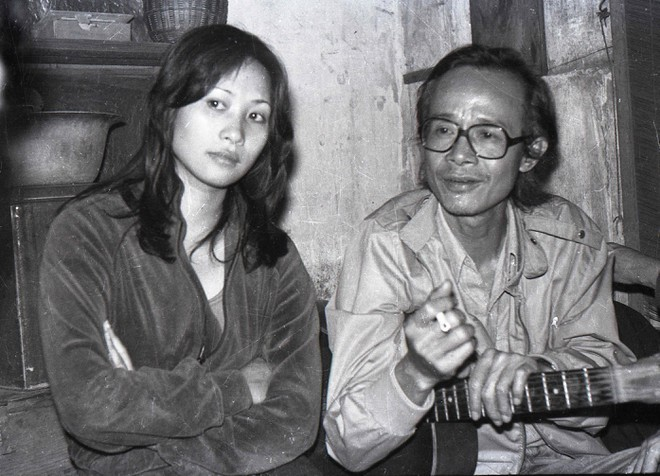

TRINH CONG SON
(1960–2001)

One of the Greatest VietNam Musicians Ever
(1960–2001)
One of the Greatest VietNam Musicians Ever
CÁT BỤI
"Hạt bụi nào hóa kiếp thân tôi
Để một mai vươn hình hài lớn dậy
Ôi cát bụi tuyệt vời
Mặt trời soi một kiếp rong chơi
Hạt bụi nào hóa kiếp thân tôi
Để một mai tôi về làm cát bụi
Ôi cát bụi mệt nhoài
Tiếng động nào gõ nhịp không nguôi
Bao nhiêu năm làm kiếp con người
Chợt một chiều tóc trắng như vôi
Lá úa trên cao rụng đầy
Cho trăm năm vào chết một ngày
Mặt trời nào soi sáng tim tôi
Để tình yêu xay mòn thành đá cuội
Xin úp mặt bùi ngùi
Từng ngày qua mỏi ngóng tin vui
Cụm rừng nào lá xác xơ cây
Từ vực sâu nghe lời mời đã dậy
Ôi cát bụi phận này
Vết mực nào xóa bỏ không hay..."